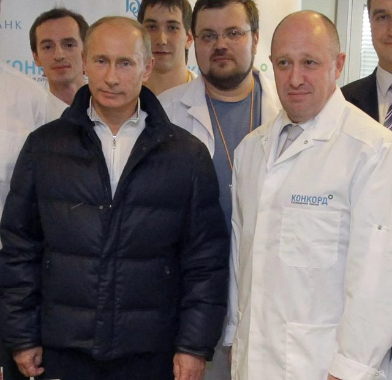

I like decomposing real-world problems through data and through writing, and often the two merge.
Applied data scientist working across distributed machine learning, causal inference, and NLP. I take a complex problem apart to find the assumption underneath it, then test whether it holds, in the data and in the argument.

I'm drawn to problems where careful measurement changes what people decide. Whether I'm building a model or writing an argument, the move is the same: take a claim everyone accepts, pull apart the assumption underneath it, and test whether it survives. In a pipeline that means leakage-safe splits, honest metrics under class imbalance, and robustness checks, making sure a result reflects real signal rather than the modelling choice.
My background is as much in writing as in modelling, and the two often merge. I've published analysis on AI-enabled targeting and international security, work that lives exactly where data and argument meet. That same instinct runs through everything I build, whether the subject is conflict, financial markets, or aviation. I completed a BA in Computer Science at Columbia and an MSc in Applied Social Data Science at the LSE, and I'm most drawn to the intersection of computational methods, AI governance, and security policy.
Four projects, one discipline:
rigorous measurement on imperfect data.
MSc dissertation estimating the effect of coalition airstrikes on insurgent violence, 2016–2020. A province-month panel links strike data to attack outcomes from independent sources, with a 12-month distributed-lag fixed-effects model separating retaliation (strikes raise attack frequency) from capacity degradation (strikes cut attack success rate).
An event-study and clustering analysis of how FTSE 100 sectors weathered the Brexit referendum versus COVID-19. Live data collection from public APIs feeds volatility analysis, PCA, and K-means to build a composite resilience score, showing resilience is crisis-dependent, not a fixed property of a sector.
A distributed pipeline testing whether social-media sentiment predicts next-day stock movements, built on ~3.7M tweets with PySpark on Google Cloud Dataproc. A leakage-safe temporal split makes the honest chance-level result trustworthy.
A two-stage Spark MLlib framework predicting whether a flight is delayed and how severely, benchmarked across three US hubs on 3.4M records. My contribution to this group project: the Gradient Boosted Trees model (highest AUC and precision at Stage 1) and the scalability experiment across incremental data partitions.
Writing
My Publications
Weapons of Moral Dilution: How AI Is Reprogramming Warfare, Surveillance, and Repression in the Middle East
A sourced analysis of AI-enabled targeting, surveillance, and the erosion of meaningful human oversight across Saudi Arabia, Iran, and Israel, and why existing arms-control frameworks can't govern it.
Read the full piece →
Russian Roulette: Prigozhin's Fatal Victory
On the Wagner Group mutiny and what Prigozhin's gambit exposed about the fault lines inside Putin's Kremlin.
Beyond Charisma: Kılıçdaroğlu's Temperate Resistance in Turkey's Presidential Race
On the challenger's understated strategy against Erdoğan and what it revealed about opposition politics in Turkey.
Balancing the Budget: Macron's Debt to the French Working Class
On the politics of French pension reform and the cost Macron's fiscal choices imposed on working-class voters.
Imran Khan's Revolution: Pakistan's Brightest Hope or Bleakest Danger?
On Khan's populist movement and the tension between democratic promise and institutional risk in Pakistan.
Education
Experience
Click a role to expand.